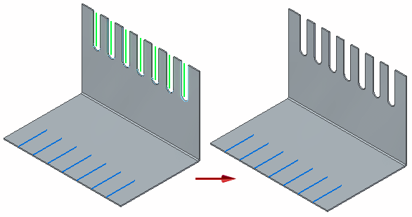
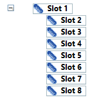
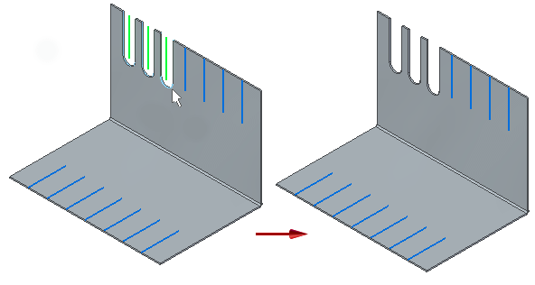
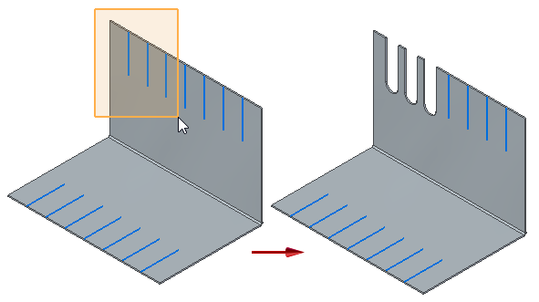
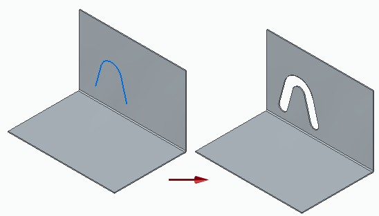
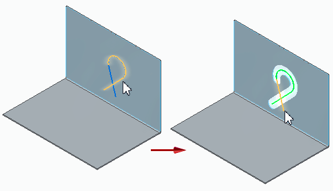
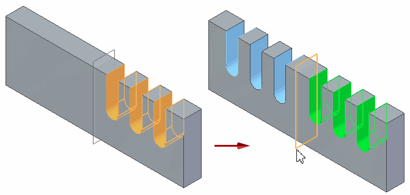
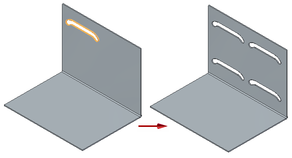

Creating slots
You can use the Slot command to create a slot feature along a tangent continuous sketch in the synchronous or ordered part and sheet metal environments.

Once created, the path used to create the slot is exposed in the Assembly environment to support slot relationships.
When working with the Slot command, you can use:
-
The Move to Synchronous command to convert an ordered slot feature to the synchronous modeling mode. After moving the ordered slot feature, you can still edit the feature in the synchronous modeling mode.
-
The Slot Options dialog box to specify the definition of the slot. You can control such things as the slot width and end condition for the slot. You can also specify if you want to create a raised or recessed counterbore slot, along with the path depth and offset depth for the counterbore slot.
-
The More Slots button on the command bar to add more occurrences for the selected slot. To add more slot occurrences, click the edit handle for the slot (1), click the More Slots button, click the path for the new slot (2), and click to place the new slot (3).

You can add more slots one at a time or fence select multiple paths to create multiple slots at once.
Creating multiple slots
With a single use of the Slot command, you can select multiple profiles simultaneously, to create multiple slots that contain identical parameters.

Once created, a group of slots is created in PathFinder.

You can select geometry on any plane, but once you select a sketch to define the slot, you can only select sketches within that plane.
You can select the paths one at a time,

or you can drag the cursor to fence-select multiple paths at once.

You can also use the Shift and Ctrl keys to add or remove paths from the set of fenced paths.
If you select paths that are continuous and tangent the paths are automatically chained to create a single path, resulting in the creation of a single slot.

When you select self-intersecting geometry, Solid Edge automatically stops the geometry selection at the last non self-intersecting segment of the tangent chain. This prevents you from accidentally creating a disjoint body.

If you select invalid geometry, an error message informs you which selection caused the error.
Editing slots
In the synchronous environment, you can move a slot along the face, edit the slot feature to change such things as slot width or extent, or you can edit the slot profile to make changes to the sketch element used to create the slot. For more information, see Move or edit a slot in the synchronous environment.
In the ordered environment, you can dynamically edit a slot, edit the slot feature to change such things as the bead direction and extent, or you can edit the slot profile to make changes to the sketch element used to create the slot. For more information, see Edit a slot in the ordered environment.
Mirroring and patterning slots and slot groups
You can use the Mirror command to create a mirror copy of a slot or slot group about a plane.

You can use the Pattern command to create a pattern of a slot or slot group.
